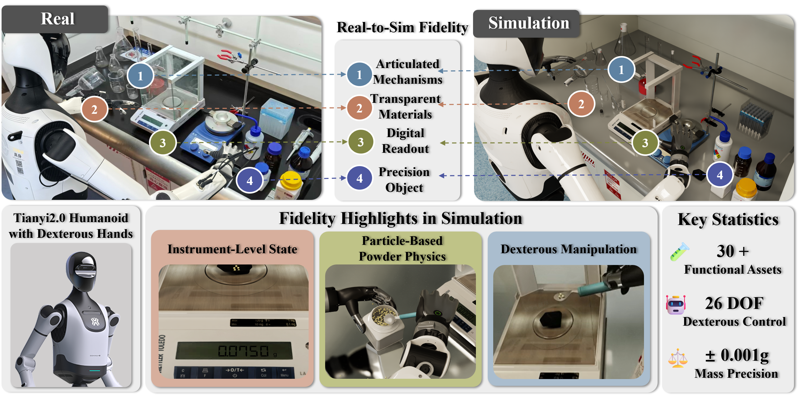
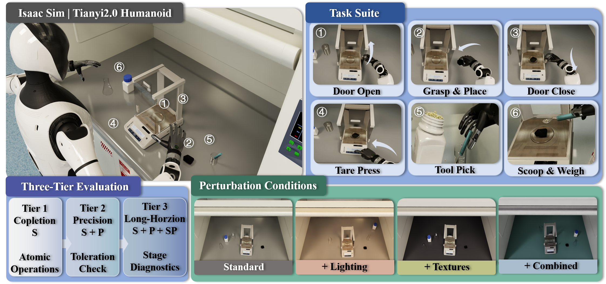
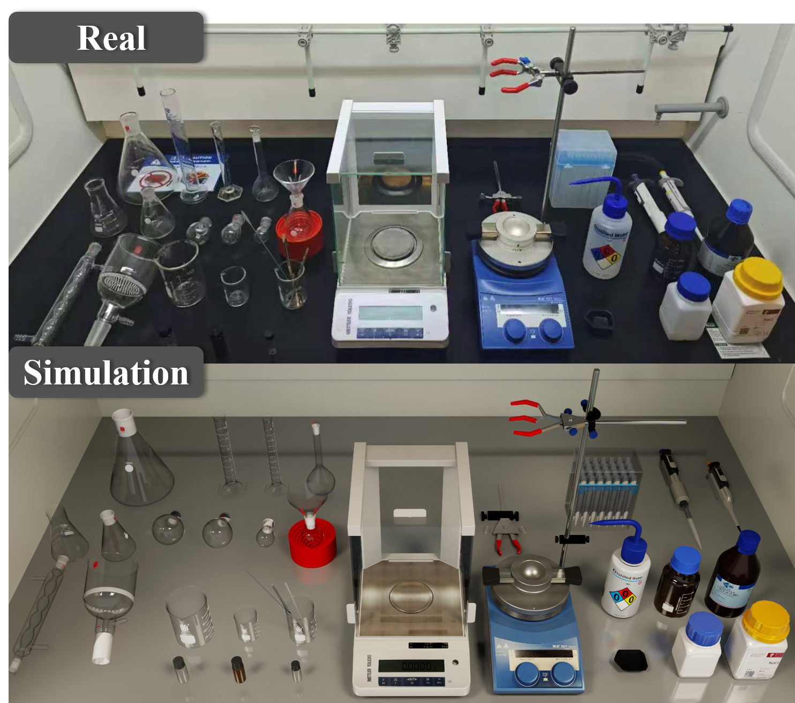
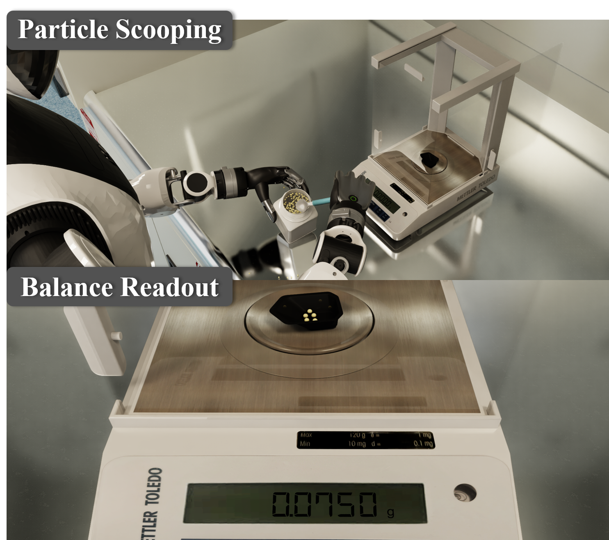

The first benchmark for humanoid dexterous manipulation in precision-critical laboratory environments. Over 30 functionally faithful assets covering the core operations of routine organic chemistry experiments, with articulated instruments, particle-based powder physics, and closed-loop instrument readouts enabling a complete manipulation-to-measurement pipeline.


All tasks are derived from real organic chemistry standard operating procedures.
Pinch-and-slide grasp on the balance windshield door handle along prismatic joint.
Precision placement of weighing boat on balance pan center. Position error ≤ 15 mm.
Close the balance windshield door, reversing the open operation along the prismatic joint.
Single-finger extension to press the tare button, requiring dexterous hand control.
Pick up the spatula, requiring sustained contact and controlled grasp force.
Bimanual powder scooping with fine-force control. Target: 0.850 ± 0.001 g.
7 steps composing 6 atomic operations · Precision target: 0.850 ± 0.001 g
Six atomic operations and a complete seven-step solid-weighing workflow derived from real laboratory SOPs.
Over 30 functionally faithful assets with articulated instruments, particle-based powder physics, and closed-loop instrument readouts, providing realistic interaction and measurement.
Multi-level evaluation jointly measuring task completion, experimental precision, and long-horizon execution. Reveals the gap between completion and experimental validity.
No existing benchmark combines humanoid dexterous hands, precision-critical laboratory tasks, and quantitative evaluation.
| Benchmark | Embodiment | Protocol Grounding | Scientific Manip. | Evaluation | ||||||||
|---|---|---|---|---|---|---|---|---|---|---|---|---|
| Hum. | Dex. | Lab | SOP | Hier. | Constr. | Bi. | Instr. | Tool | Mat. | Step | Prec. | |
| RLBench | ||||||||||||
| RoboCasa | ||||||||||||
| ManiSkill 3 | ||||||||||||
| LIBERO | ||||||||||||
| RoboTwin 2 | ||||||||||||
| GenieSim 3 | ||||||||||||
| Factory | ||||||||||||
| DexJoCo | ||||||||||||
| LabUtopia | ||||||||||||
| Chemistry3D | ||||||||||||
| AutoBio | ||||||||||||
| MATTERIX | ||||||||||||
| Labimus (Ours) | ||||||||||||
Simulating laboratory tasks is more demanding than home or tabletop tasks. The powder must be transferred as measurable mass, the balance must update its reading in real time, and the task is scored against a protocol tolerance of ±0.001 g.
Over 30 objects in three categories: containers, tools, and instruments. All sourced from ArtVIP with high-quality meshes, realistic textures, and physically accurate collision geometry.

Each powder grain is a small rigid body resolved by PhysX. The closed-loop path from particle physics through mass computation to digital readout grounds the precision metric. Success: mass within ±0.001 g.

Task completion is a necessary but insufficient criterion for laboratory manipulation. Each tier adds a new evaluation dimension that reveals failure modes invisible at the previous tier.
All 6 atomic operations evaluated with binary success only. Did the intended state change occur? Establishes a completion-rate baseline.
Operations with SOP tolerances re-evaluated with continuous precision metrics (e.g., ±0.001 g, ≤15 mm). Same physical actions, different criteria — directly quantifying the precision gap.
Complete 7-step solid-weighing workflow with step-level progress tracking and stage-level diagnostics. Compounding errors degrade precision at later steps.
All tasks are evaluated on procedural layouts (Standard condition) with three perturbations layered on top, forming a 3 × 4 evaluation matrix.
Procedural layouts with default lighting and textures.
Randomized color temperature (3000–7000K) and intensity (0.4–1.6x).
Randomized benchtop (10 materials) and background (5 materials) via OmniPBR.
All perturbation axes applied simultaneously, simulating realistic deployment.
Policies that successfully complete laboratory tasks can still fail to satisfy the quantitative tolerances required by experimental protocols.
| Task | ACT | DP | π0 |
|---|---|---|---|
| Door open | 56.7 ± 3.4 | 49.3 ± 2.5 | 47.3 ± 7.4 |
| Door close | 24.7 ± 0.9 | 6.7 ± 2.5 | 40.7 ± 3.8 |
| Tare press | 2.0 ± 0.0 | 0.0 ± 0.0 | 0.0 ± 0.0 |
Mean ± std across 3 seeds (50 eps each).
| Condition | Mean ± Std |
|---|---|
| Standard | 47.3 ± 7.4 |
| +Lighting | 41.3 ± 5.0 |
| +Textures | 46.7 ± 4.1 |
| +Combined | 40.0 ± 5.7 |
Combined perturbation: largest drop (−7.3 pp).
| Metric | Seed 1 | Seed 2 | Seed 3 | Mean ± Std |
|---|---|---|---|---|
| Success S | 4.0 | 6.0 | 6.0 | 5.3 ± 0.9 |
| Precision P | 2.0 | 6.0 | 2.0 | 3.3 ± 1.9 |
Completion alone does not guarantee precision.
Binary success overestimates valid execution.
@article{labimus2026,
title = {Labimus: A Simulation and Benchmark for Humanoid
Dexterous Manipulation in Chemical Laboratory},
author = {Wu, Yuhan and Jin, Zhao and Li, Tao and Zhang, Yuheng
and Che, Zhengping and Tang, Jian and Wang, Zhichao
and Wang, Shuo and Jiang, Jun and Li, Xiaobo
and Zhang, Yanyong and Xia, Yan},
journal = {arXiv preprint},
year = {2026}
}